Make beginner participation approachable while keeping the practical event details clear.

Original synthetic production asset. This fictional client and venue do not represent a real organisation.
The person behind the brief
Sam, volunteer coordinator
CivicCycle is a fictional community repair group. Its volunteers love bicycles, but its old flyer listed tools and jargon before explaining the event. New riders thought they needed expertise or expensive equipment. Sam wants a clear, friendly invitation to a basic maintenance session.
The audience
First-time riders and families who want to learn a simple maintenance check.
Approved factual copy
- Bike care for beginners
- Sunday · 10 am–noon
- CivicCycle · Community Hall, 22 Market Street
- Bring your bicycle. Tools provided.
- Drop in. No experience needed.
You may write your own headline and reorder this information. Retain the facts and practical instructions. Dates are fictional weekday descriptions; no real scheduled event is implied.
Boundary: Do not guarantee safety of a repaired bike, promise professional certification, or imply an identifiable stock-photo person endorses the group.
Your creative territory
Choose energetic, calm, diagram-led, photographic or typographic communication. A complex bike cutout is optional; clean reasoning matters more than a difficult mask.
The logo identifies the client. Keep its proportions and readable space around it; do not use a photograph as the client's trademark. Palette roles and title fonts below are starting directions. You may propose a purposeful alternative palette or type system and defend it at the planning conference. No layout is prescribed.
Production scope: 2550 × 3300 px RGB print study and 1080 × 1350 px RGB screen adaptation. Keep separate layered PSDs or genuinely editable artboards. Export PNGs. The school printer/profile must be checked before a press-ready claim.
Download this complete kitBrand ingredients
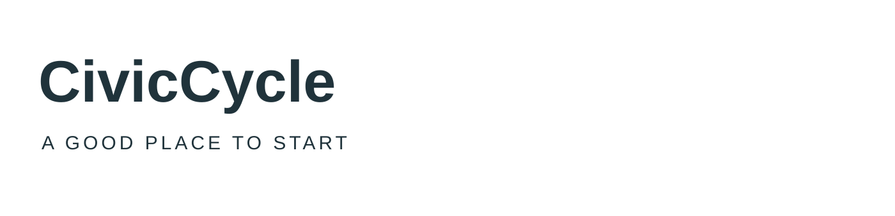
Colour SVG · Dark SVG · Light SVG · Transparent PNG
Type candidates: Arial Bold: direct title candidate; Arial: detail. Use school-installed fonts; no installation is required. If a candidate is unavailable, use an available serif/sans-serif equivalent and record the substitution.
ACO swatches · ASE palette · CSS values · Colour-role record
Files have deterministic colour values; Photoshop import/manual-add and artboard captures are awaiting the native run. See the software lab. Palette harmony alone does not guarantee readable text.
Choose your raw materials
Complete source and licence links
Use the workshop scene as one option. Compare a wheel/tool detail or original diagram for a second concept. Use only what earns a role in your concept. You may combine, crop or adapt permitted assets and add your own credited work. The photographs show their source settings, not this fictional business. Do not imply endorsement. For CC BY-SA source derivatives, retain the source's share-alike licence and credit in the delivered work; keep other assets' rights identifiable.
CivicCycle original teaching scene
1536 × 1024 · OpenAI image generation, art-directed for Chad
Original AI-assisted classroom production asset · source · synthetic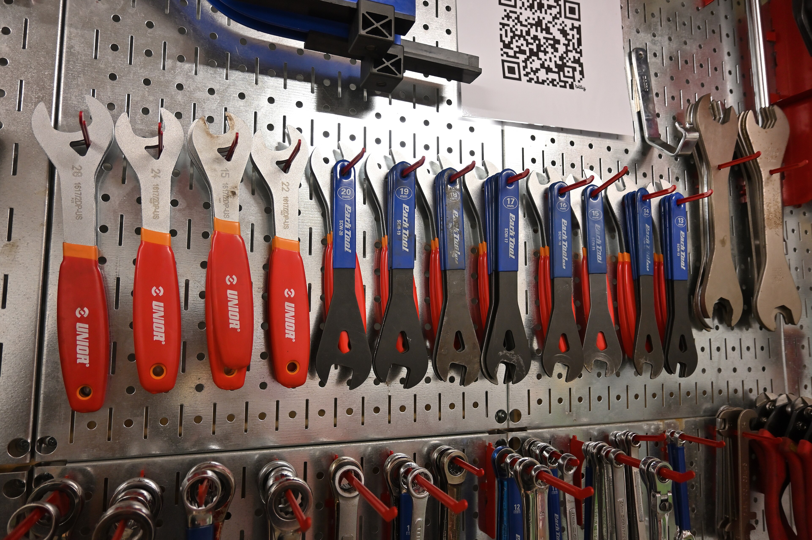
Bicycle cone wrenches at Somerville Bike Kitchen.jpg
3840 × 2560 · 4300streetcar
CC BY 4.0 · source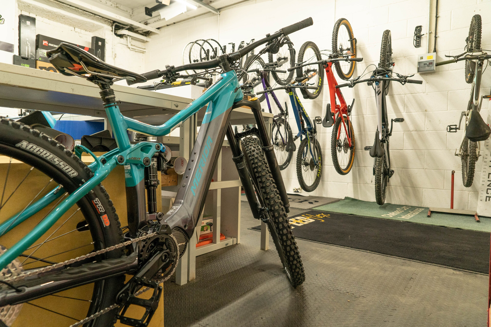
Bike workshop - bicycle repair shop.jpg
3840 × 2560 · Alextredz
CC BY-SA 4.0 · source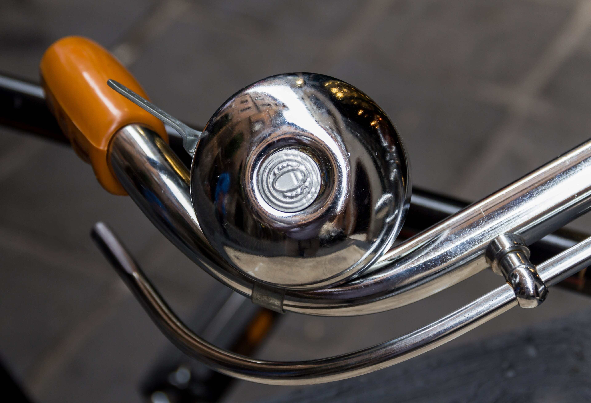
Rome (Italy), Bicycle -- 2013 -- 4368.jpg
3840 × 2620 · Dietmar Rabich
CC BY-SA 4.0 · source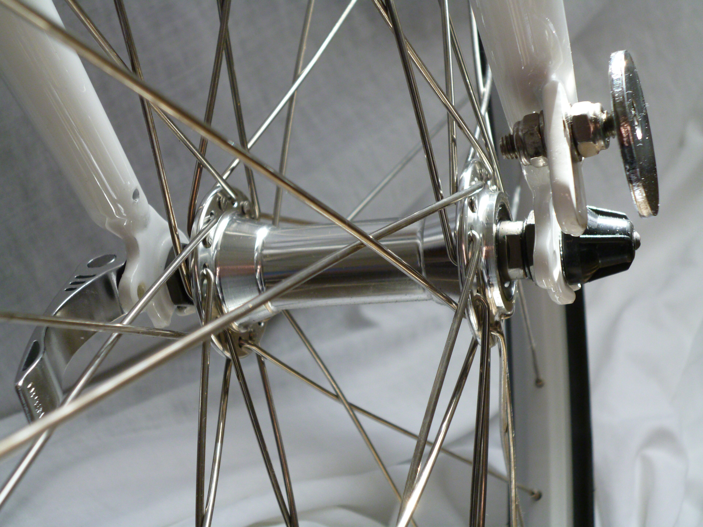
Wheel quick release.JPG
3840 × 2880 · Armchair
CC BY-SA 3.0 · source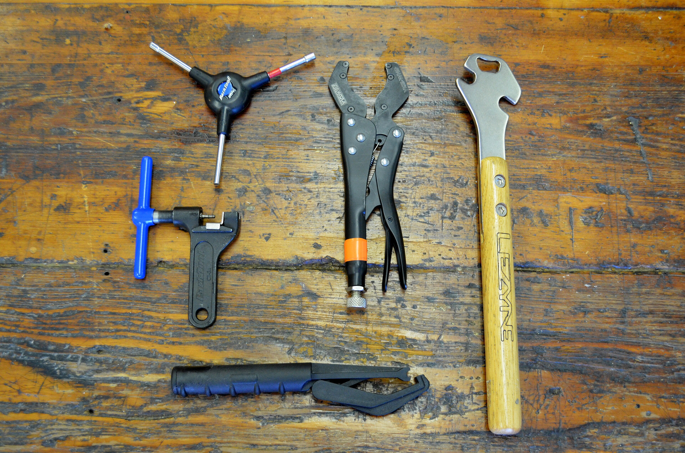
Collection of bicycle tools.jpg
3840 × 2543 · Glory Cycles
CC BY 2.0 · source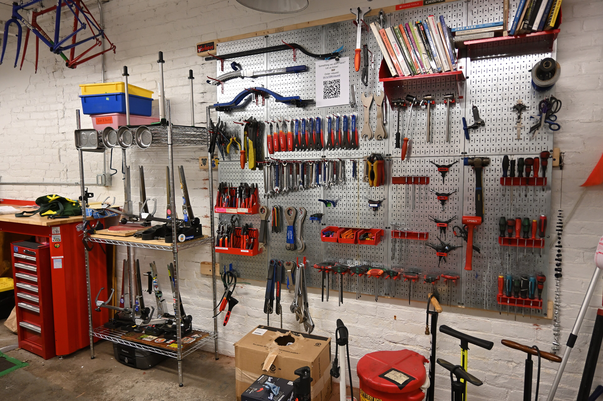
Tools at Somerville Bike Kitchen 1.jpg
3840 × 2560 · 4300streetcar
CC BY 4.0 · source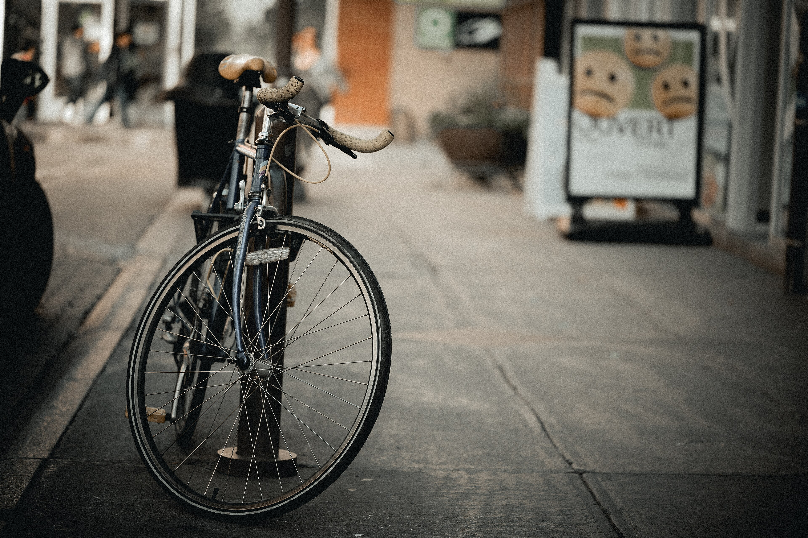
Bicycle parked on a sidewalk, Quebec City.jpg
3840 × 2560 · Wilfredor
CC0 · source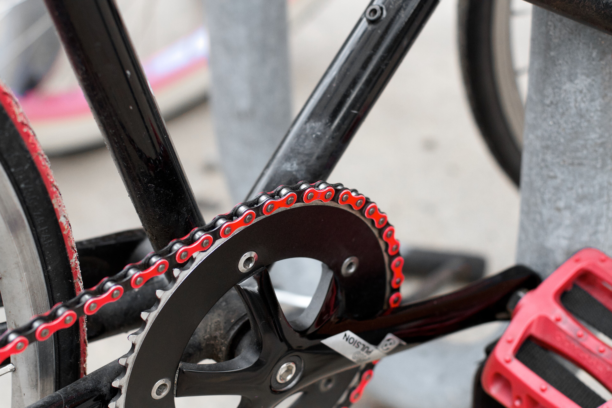
2015-365-274 Fire Chain (21825205336).jpg
3840 × 2560 · cogdogblog
CC BY 2.0 · source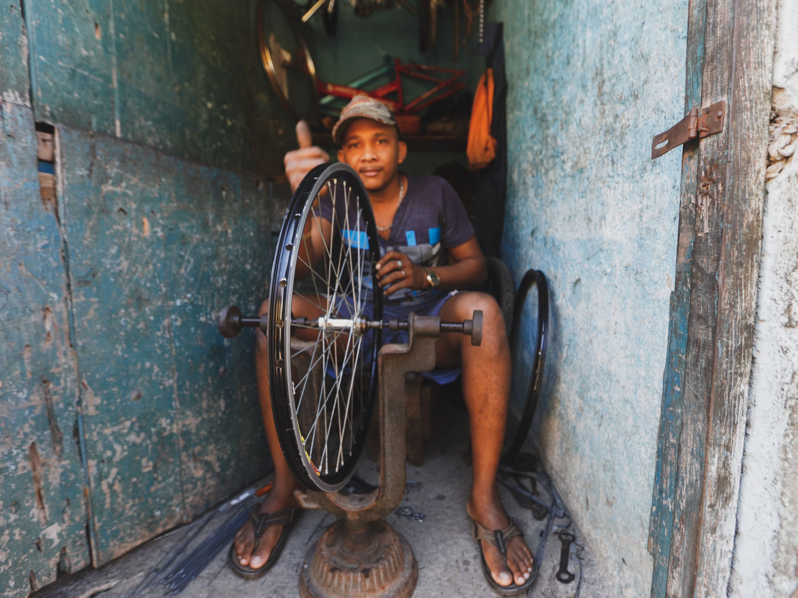
A Man Fixing A Bicycle Rim
3000 × 2251 · Mehmet Turgut Kirkgoz
Pexels License · source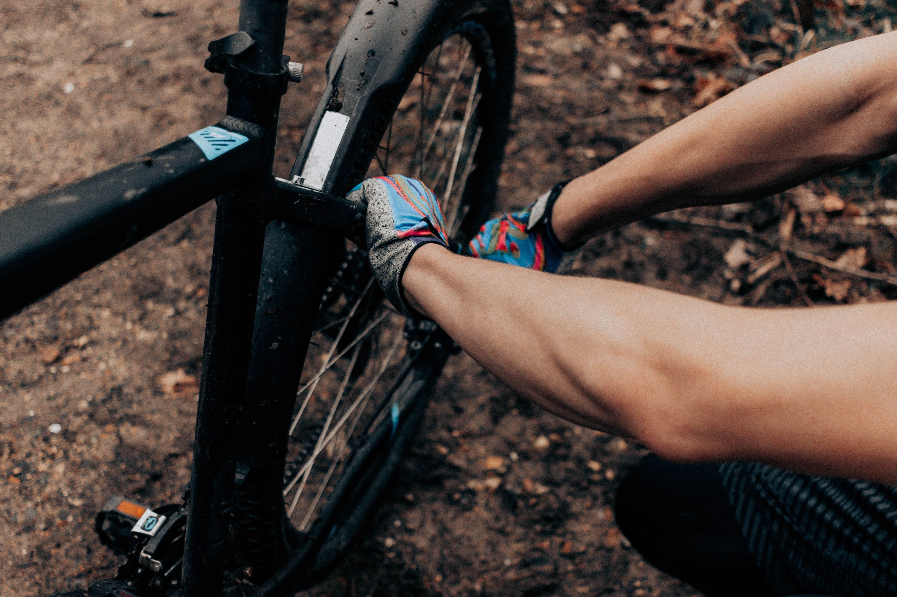
Person Repairing A Bicycle Wheel
3000 × 2000 · Mathias Reding
Pexels License · source